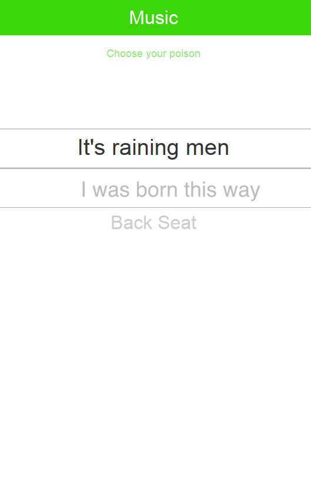
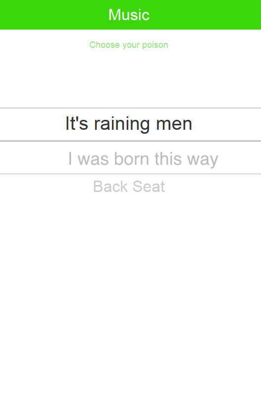

Sasona is a cute little co-op located in South Austin. I rebuilt Sasona's website since many prospective members had negative things to say about the old one. I wanted to make the new site more user-friendly. I think everyone is happier with the new site at Sasona.org
I'm hoping to pick this project back up. For the Intel Joule Hackathon, I worked on programing the Intel Joule to receive distance data from a camera a cyclists can clip on the back of their helmet. They would receive a vibration in the helmet to let them know there is an object accelerating behind them and they should move over. If there was a collision the camera would store the video and upload it to the "Cloud" where the user can retrieve the video from a web or app portal. This project is incomplete.
StartOut is a non-profit advocating for LGBTQ entrepreneurs, and they host hackathons in various locations. I joined a group called "Follow the Music". We created a prototype for an app that would play music in the direction you needed to turn as a part of your directions. I created the User Interface in Proto.io

 
